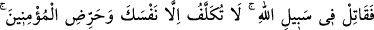
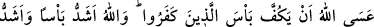
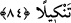

Dünya ve âhiret saadetinin sermayesidir Muhammed
Hz. Adem’in yaratılmasının maksadıdır Muhammed
Her ne kadar sûret olarak Adem önce gelse de
Gerçekte öncü ve önderdir Muhammed
Gerçi peygamberlik yüce bir makamdır Hüdâyî
Fakat hem Hâlık’ın dostudur Muhammed,
Hem hâtemü’l-enbiyâdır Muhammed
Hakîmlerden birisi şöyle der: Allah Teâlâ, Hz. Muhammed (s.a.v.)’i yaratırken başını
bereketten, gözlerini hayâdan, kulaklarını ibretten, dilini zikirden, dudaklarını tesbihten,
yüzünü rızâdan, göğsünü ihlâstan, kalbini rahmetten, gönlünü şefkatten, avuçlarını
cömertlikten, saçlarını cennet bitkisinden, tükrüğünü de cennet balından yarattı. Onu bu
sıfatlarla kemâle erdirince; “Bu size hediyemdir. Hediyemin kadrini bilip, yüce tutun.”
buyurarak onu bu ümmete gönderdi. Bu bilgi, “Zehretü’r-riyâz” adlı eserden alınmıştır.
Hz. Îsâ (a.s) semaya cesediyle birlikte yükseldiği halde Hz. Peygamber (s.a.v.)’in
şerefli ve tertemiz cesedinin dünyâ toprağında kalışının îzâhı sadedinde şöyle
denmiştir: Onun temiz cismi burada cesedler âlemini ıslah ve düzenleme için kalmıştır.
Çünkü o, zâtın tılsımıdır. Dolayısıyla bütün düzen, onun şerefli varlığı sâyesindedir. Bu
bilgi, Üftade Efendi adı ile meşhur Şeyh hazretlerinden (Allah onun sırrını takdis
eylesin! Âmîn, Âmîn yâ Rabbe’l-âlemîn)- naklen “el-Vâkıatü’l-Mahmûdiyye”de
geçmektedir.
84- Artık Allah yolunda savaş. Sen yalnız kendinden sorumlusun. Mü’minleri de
teşvik et. Umulur ki Allah kâfirlerin gücünü kırar (güçleriyle size zarar vermelerini
önler). Allah’ın gücü daha çetin ve cezâsı daha şiddetlidir.
“Allah yolunda savaş.” Ey Muhammed, münâfıklar ağırdan alır, diğerleri de
ihmalkârlık edip seni tek başına bırakırsa, Allah’ın rızasına ulaştıran yolda -ki bu yol
cihaddır- sen tek başına savaş. Onların yaptığına aldırma! “Sen yalnız kendinden
sorumlusun!” Sen sâdece kendi fiilinden sorumlusun. Onların karşı çıkıp ağırdan
almaları sana zarar vermez. Kimse sana yardım etmese bile sen cihada giriş. Çünkü seni
zafere ulaştıracak olan ordular değil, Allah’tır.
Tekellüf, meşakkatle yâhut yapmacık olarak yapılan şeyin adıdır. Övgüye layık olan
tekellüf, ibâdetlerde olduğu gibi başta meşakkatle yapılıp sonra ısınılarak muhabbetle
yapılan şeylerdir. Yerilen tekellüf ise yapmacık ve gösteriş olarak yerine getirilen